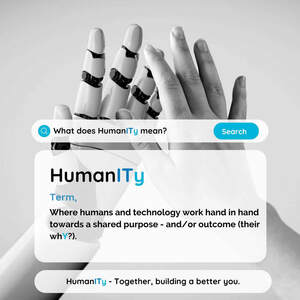

Trade Mark Journal No.2026/003 16 January 2026
UK00004316976 29 December 2025 (9,16,35,41,42)

- Class 9
- Computer software; downloadable software; mobile applications; downloadable computer software for use in human resources management; downloadable software for workforce management, skills analysis, and training needs analysis; downloadable software using artificial intelligence for generating text, reports and analytics; downloadable electronic publications, training materials and workbooks in the field of human resources, leadership, artificial intelligence and workplace training.
- Class 16
- Printed matter; printed publications; manuals; handbooks; workbooks; training manuals; training workbooks; instructional and teaching materials; printed teaching aids; printed reports; printed informational materials; printed newsletters; printed seminar and workshop materials; pamphlets; brochures; printed diagrams, charts and frameworks; printed cards and posters; all of the aforesaid relating to human resources, leadership, organisational development, workplace training, artificial intelligence, technology in the workplace and the HumanITy concept.
- Class 35
- Business consultancy; business management consultancy; human resources consultancy; personnel management consultancy; advisory services relating to business organisation and management; outsourced human resources management services relating to staff recruitment and retention; consultancy relating to workforce planning, skills mapping and competency frameworks; business consultancy relating to the use of artificial intelligence in the workplace; development and implementation of personnel, human resources and business strategies; preparing business reports and analyses relating to people, performance and skills.
- Class 41
- Education; providing of training; arranging and conducting workshops, seminars, conferences and courses; online training services; provision of non-downloadable training materials; coaching [training]; leadership development training; training relating to human resources, management, leadership, artificial intelligence, technology in the workplace and personal development; publication of training materials, workbooks and educational content.
- Class 42
- Software as a service (SaaS) featuring software for human resources management, workforce planning, skills mapping, training needs analysis and use of artificial intelligence in the workplace; platform as a service (PaaS) featuring computer software platforms for generating and managing AI prompts and workflows; providing temporary use of non-downloadable software using artificial intelligence for generating text, reports, analytics and recommendations; design and development of computer software in the field of human resources, workforce management and training.
Darren Logue